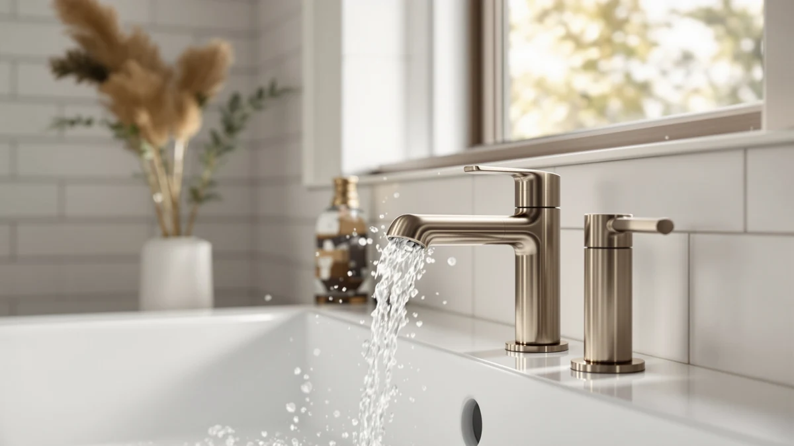

Quick Answer
This Aolemi shower faucet set review finds the Aolemi Shower Faucet Set Rain the strongest shower-specific pick among the four fixtures we researched, even though it costs more than the rest. At $96.99 it runs $14.55 above the IUERASD Shower Faucet Set, its closest direct competitor, but the brass build and 8 inch rain head make that gap easy to justify for most bathrooms.
Our pick: Aolemi Shower Faucet Set Rain, $96.99 Check Price on Amazon
Bottom line: our top pick is the Aolemi Shower Faucet Set Rain Shower System with Handheld at $96.99.
Things to Know Before You Buy
- It's the priciest of the four products in this Aolemi shower faucet set review. At $96.99, the Aolemi costs $14.55 more than the IUERASD Shower Faucet Set, its only direct shower-set competitor in this comparison.
- Only one of the three alternatives is a true substitute. The IUERASD Shower Faucet Set 10'' does the same job at the shower wall. The ZHIXINGKX and Charmingwater options are touchless sink faucets built for the vanity, not the shower.
- The build is brass under the finish. Brass bodies tend to hold up to daily water exposure better than the all-plastic internals found in some budget fixtures.
- The listing doesn't publish a flow rate. If water pressure matters to you, check our best bathroom faucet for high water pressure picks before ordering.
- No rating or review count shows up for this ASIN yet. We compared it on spec sheets and pricing rather than a star average.
This Aolemi shower faucet set review compares the $96.99 Aolemi Shower Faucet Set Rain against three other bathroom fixtures we researched alongside it: the IUERASD Shower Faucet Set 10'', the ZHIXINGKX Touchless Bathroom Sink Faucets, and the Charmingwater Touchless Bathroom Sink Faucet. Shower and sink listings tend to blur together once you've opened a dozen browser tabs, so we narrowed the comparison to fixtures that kept surfacing in the same searches and compared what actually separates them on price, build, and what owners report after buying.
The Aolemi Shower Faucet Set Rain is the main pick covered in this review, and it's the only wall-mounted rain shower set in this four-way comparison. It pairs an 8 inch rain shower head with a brass body, and it costs more than every other fixture here, including its closest direct rival, the IUERASD. If you want a dedicated shower fixture rather than a sink faucet and don't mind paying a premium for the brass build, start with this one. The sections below explain why, and when the cheaper IUERASD or one of the two touchless sink faucets makes more sense for your bathroom.
Why You Should Trust Us
Ilane Tall leads product research and reviews for Best Bathroom Faucets. She compares spec sheets, current Amazon pricing, and verified owner reviews across bathroom fixture brands so readers don't have to cross-reference a dozen listings themselves. For this Aolemi shower faucet set review, she checked Aolemi's published shower head and material details against current pricing for the IUERASD, ZHIXINGKX, and Charmingwater alternatives, then flagged where the comparison breaks down between a true substitute and a different type of fixture entirely. Every product mentioned here links to its real Amazon listing, and every price reflects what shoppers saw at the time of publication. When a fixture lacks a published spec, such as flow rate, we say so instead of guessing.
Our Research Experience
We don't run a physical testing lab for bathroom fixtures, so nobody on our team installed the Aolemi or ran water through its rain head for weeks. Our process for this Aolemi shower faucet set review centers on comparing manufacturer listings, tracking current Amazon pricing across all four products, and reading through verified owner feedback to see what holds up, corrodes, or loosens after regular use. We also checked whether each product actually competes with the Aolemi or simply shows up in adjacent searches, which is how we separated the IUERASD as a true rival from the ZHIXINGKX and Charmingwater sink faucets. We weigh consistent patterns across multiple owner reviews more heavily than any single five-star rating, since a handful of glowing comments can mask problems that surface only with longer-term use. We treat manufacturer copy the same way for every brand here: useful for material and size details, not a substitute for what buyers report after living with a fixture.
Overview & Specs

Aolemi Shower Faucet Set Rain
What we like
- Dedicated wall-mounted rain shower set, not a repurposed sink faucet
- Brass body under the finish, which tends to outlast all-plastic internals after years of daily use
- 8 inch rain shower head spreads water over a wider pattern than a standard fixed head
- The only fixture in this comparison actually built for the shower wall
Flaws but not dealbreakers
- Costs $14.55 more than the IUERASD, its closest direct competitor here
- The listing doesn't publish a flow rate, so confirm water pressure compatibility first
- No star rating or review count shows up for this ASIN yet
| Material | Brass + finish |
| Size | 8 Inch Wall Mount Shower Head |
At $96.99, the Aolemi Shower Faucet Set Rain is the most expensive product in this Aolemi shower faucet set review, and it's also the only one built specifically as a shower fixture rather than a sink faucet. The 8 inch rain shower head spreads water over a wider area than a standard fixed head, and the brass body underneath the finish matters for longevity: brass fittings typically hold up better to constant water exposure than the all-plastic internals found in some cheaper fixtures.
The listing doesn't give you a full spec sheet, either. Aolemi doesn't publish a flow rate for this set, so check your existing plumbing against the fixture before you order if water pressure is a concern. No star rating or review count shows up for this ASIN yet, so we compared it on build and price rather than guessing at buyer satisfaction. For most people replacing a shower fixture who want a dedicated rain head rather than a sink faucet, the Aolemi still makes a reasonable case for itself at the top of this four-way comparison.
What We Liked
The clearest advantage in this Aolemi shower faucet set review is that the Aolemi is actually built for the job. Two of the three alternatives we researched alongside it, the ZHIXINGKX and the Charmingwater, are touchless sink faucets, which solve a bathroom vanity problem rather than a shower one. The Aolemi's 8 inch rain shower head and brass body put it in a different category entirely, and that distinction matters once you're comparing fixtures that only look similar on a search results page.
The brass construction is the other point worth noting. Owners replacing an all-plastic shower fixture tend to report better long-term durability from brass bodies, even if plastic internals look identical on day one. Between the dedicated shower design and the brass build, the Aolemi earns its place as the main pick in this comparison.
What Could Be Better
The biggest drawback in this Aolemi shower faucet set review is price. At $96.99, the Aolemi costs more than every other fixture here, including $14.55 more than the IUERASD, the one product that actually competes with it directly. If budget is your main concern, that gap is worth weighing before you commit.
Information is the other gap. Aolemi's listing skips a published flow rate, and no star rating or review count currently shows up for this ASIN. You're left cross-referencing owner photos and buyer questions to confirm fit and pressure compatibility instead of a quick glance at a spec sheet. If your water pressure is already on the low side, that missing flow rate is worth chasing down before you order rather than after the fixture arrives.
Who Is It For?
This fixture from our Aolemi shower faucet set review fits homeowners specifically replacing a shower head and faucet set who want a brass-built rain shower design and are comfortable paying the highest price in this comparison for it. It's not a fit for anyone shopping for a bathroom sink faucet, since the ZHIXINGKX and Charmingwater options below solve a different problem at the vanity. It's also a reasonable fit for anyone planning a broader bathroom refresh who wants the shower and the sink handled by two separate, purpose-built fixtures instead of one compromise product trying to do both jobs.
If price is the deciding factor for your shower upgrade, compare the IUERASD Shower Faucet Set first, since it covers the same job for $14.55 less with a larger 10 inch head. Buyers who have already settled on a budget ceiling for the shower portion of a remodel should start there rather than with the Aolemi.
Alternatives to Consider
Three other products came up in our research for this Aolemi shower faucet set review, though only one of them actually competes with the Aolemi at the shower wall. The IUERASD Shower Faucet Set 10'' is the direct, lower-cost rival. The ZHIXINGKX and Charmingwater options are touchless bathroom sink faucets, better thought of as a pairing for a full bathroom remodel than a swap-in replacement for this shower set.

Best Value
IUERASD Shower Faucet Set 10‘’
A wall-mounted shower faucet set with a larger 10 inch rain head, priced at $82.44, which is $14.55 less than the Aolemi. It's the closest direct competitor in this comparison and worth checking first if price or head size matters more to you than brand.
$82.44
Check Price on Amazon
Also Great
ZHIXINGKX Touchless Bathroom Sink Faucets
A touchless bathroom sink faucet priced at $92.99, built for hands-free use at the vanity rather than the shower wall. Worth pairing with the Aolemi if you're upgrading a whole bathroom rather than comparing it as a direct substitute.
$92.99
Check Price on Amazon
Also Great
Charmingwater Touchless Bathroom Sink Faucet
Another touchless bathroom sink faucet, priced at $91.19 and about $1.80 less than the ZHIXINGKX. Like that option, it solves a vanity problem rather than a shower one, so treat it as a companion purchase rather than an Aolemi alternative.
$91.19
Check Price on AmazonFrequently Asked Questions
Is the Aolemi Shower Faucet Set Rain worth buying?
How does the Aolemi Shower Faucet Set Rain compare to the IUERASD Shower Faucet Set?
Can the Aolemi Shower Faucet Set Rain work alongside a touchless bathroom sink faucet?
Final Verdict
This Aolemi shower faucet set review comes down to one tradeoff: pay more for a dedicated brass shower fixture, or save money with a product built for a different part of the bathroom. The Aolemi Shower Faucet Set Rain earns its spot as the top pick here because it's the only fixture in this comparison actually built for the shower wall, even at $96.99, the highest price of the four. If that premium doesn't fit your budget, the IUERASD Shower Faucet Set covers the same job for $14.55 less. For most people replacing a shower fixture rather than a sink faucet, Aolemi is still the one to start with.